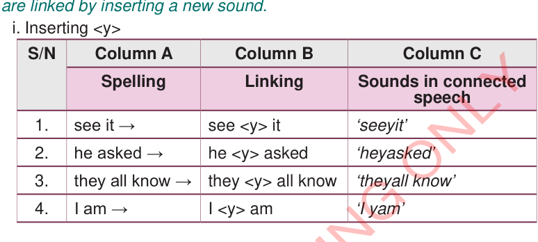
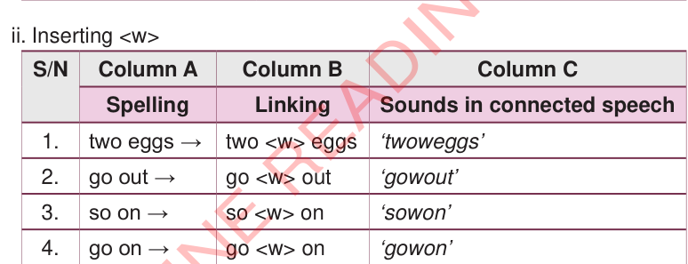

Practise connected speech by inserting a new sound.
Practise the connected speech of the following examples whose words are linked by inserting a new sound.
i. Inserting <y>

| S/N | Column A | Column B | Column C |
|---|---|---|---|
| Spelling | Linking | Sounds in connected speech | |
| 1. | see it → | see <y> it | ‘seeyit’ |
| 2. | he asked → | he <y> asked | ‘heyasked’ |
| 3. | they all know → | they <y> all know | ‘theyall know’ |
| 4. | I am → | I <y> am | ‘I yam’ |
ii. Inserting <w>

| S/N | Column A | Column B | Column C |
|---|---|---|---|
| Spelling | Linking | Sounds in connected speech | |
| 1. | two eggs → | two <w> eggs | ‘twoweggs’ |
| 2. | go out → | go <w> out | ‘gowout’ |
| 3. | so on → | so <w> on | ‘sowon’ |
| 4. | go on → | go <w> on | ‘gowon’ |
Practise connected speech by dropping some sounds in pronunciation.
(a)Read the following sentences in their written forms.
- 1. I want to go home.
- 2. Give me my pen!
- 3. Let me pick it.
- 4. She picked up the last call.
- 5. She lives next door.
- 6. I used to play football on Sunday.
- 7. It is best known as Mtakuja.
The above sentences may be connected in speech by dropping some sounds.They may sound in connected speech as follows.
- 1. “I want to go home.” Sounds like “I wan go home”
- 2. “Give me my pen!” Sounds like “Gimme my pen!”
- 3. “Let me pick it.” Sounds like “Lemme pickit.”
- 4.“She picked up the last call.”Sounds like “She picked up the lascall.”
- 5.She lives next door.Sounds like “She lives nexdoor.”
- 6.I used to play football on Sunday.Sounds like “I useto play fooballon Sunday.”
- 7.It is most known as Mtakuja.Sounds like “It’s mosknown as Mtakuja.”